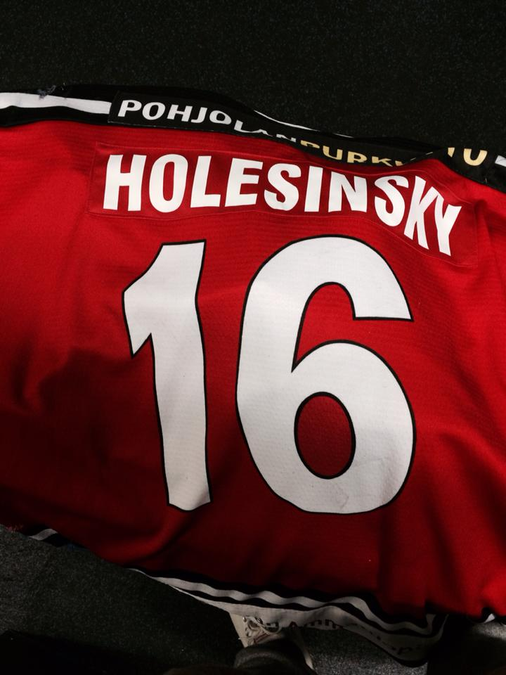
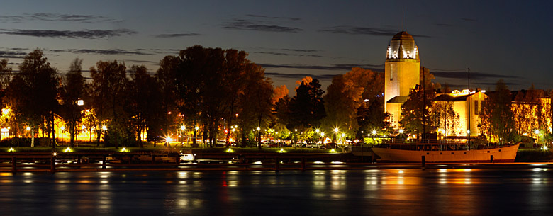

My first jersey in new team
Finally, I arrived in Finland to Joensuu.I was so excited to played for Jokipojat. After a couple of days I found out I was stupid and I am not make the same mistake ever again.We were the worst team in Finlad.We lost every single game. I was in the north part of Finland, couple miles from Russia so we had very cold weather out there. In my house I had not heat and I was without hot water as well . After 4 months in these conditions I decided leave and continued my career back home for the Slovak national team.This period of life gave me the most experience and I always apperiacate everything what I have in single moment of my life.

The city where I played for